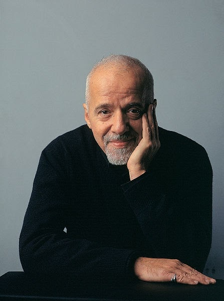

Paulo Coelho was born on 24 August 1947 in Rio de Janeiro, Brazil, and attended a Jesuit school. At age 17, Coelho's parents committed him to a mental institution from which he escaped three times before being released at the age of 20. On his parents' wishes, Coelho enrolled in law school and abandoned his dream of becoming a writer. One year later, he dropped out and lived life as a hippie, travelling through South America, North Africa, Mexico, and Europe. He started using drugs in the 1960s